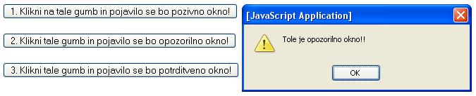

- Opozorilno okno uporabimo, kadar želimo zagotoviti, da uporabnik zares prebere pomembno sporoèilo.
- Ko se pojavi opozorilno okno, mora uporabnik klikniti gumb "OK".
- Angleška beseda "alert" pomeni alarm, budnost, èujeènost ali pripravljenost.
- Sintaksa:
alert("besedilo v oknu"); - Potrditveno okno uporabimo, kadar želimo, da uporabnik preveri ali potrdi neko informacijo.
- Ko se pojavi potrditveno okno, mora uporabnik klikniti gumb "OK" ali pa gumb "Cancel".
- Angleška beseda "confirm" pomeni potrditi ali odobriti.
- Sintaksa:
confirm("besedilo v oknu"); - Pozivno okno uporabimo, kadar želimo, da uporabnik vnese nek podatek, preden vstopi na spletno stran.
- Ko se pojavi pozivno okno, mora uporabnik vnesti neko vrednost, potem pa klikniti gumb "OK" ali pa gumb "Cancel".
- Angleška beseda "prompt" pomeni poziv k takojšnjemu, nemudnemu in neodložljivemu dejanju.
- Sintaksa:
prompt("besedilo v oknu","prednastavljena vrednost");


Slika 1, 2, 3 in 4: Pojavna okna - koda in videzi spletne strani
1. Izdelaj spletno stran, ki bo izgledala tako, kot kažejo slike 1 do 4. Datoteko poimenuj "17apriimek.html". Ne pozabi na konènico ".html".
POZOR: Najprej NATANÈNO izdelaj vajo v tej uèni enoti in jo pokaži profesorju, nato zapiši odgovore na spodnja vprašanja.
2. V kodo primera v tej uèni enoti vstavi spodaj navedene komentarje na ustrezna mesta, ki jih ti komentarji pojasnjujejo.
//Koda gumba na spletni strani, s katerim poklièemo opozorilno okno.
//Opis funkcije, ki prikaže na spletni strani potrditveno okno.
//Stavek, ki se izpiše, èe kliknemo v potrditvenem oknu gumb "Cancel" oziroma "Preklièi".
//Opis funkcije, ki prikaže na spletni strani opozorilno okno.
//Stavek, ki se izpiše, èe kliknemo v potrditvenem oknu gumb "OK".
3. Kodo primera v tej uèni enoti spremeni tako, da se bo ob zagonu spletne strani samodejno pojavilo opozorilno okno, v katerem bo napis "Tole je vaja v skriptnem jeziku "JavaScript".
1. Vprašanja za usmerjanje pozornosti in usvajanje novih besed:
1. Kdaj uporabimo opozorilno okno?
2. Kdaj uporabimo potrditveno okno?
3. Kdaj uporabimo pozivno okno?
4. Kaj pomeni angleška beseda "alert"?
5. Kaj pomeni angleška beseda "confirm"?
6. Kaj pomeni angleška beseda "prompt"?
2. Zapiši od ene do pet kljuènih besed, ki povzemajo vsebino te uène enote.
3. Vprašanja za razmislek in povezovanje z lastno izkušnjo:
1. Zapiši funkcijo JavaScripta, ki povzroèi, da se pojavi opozorilno okno; pomagaj si s sliko 1.
2. Zapiši funkcijo JavaScripta, ki povzroèi, da se pojavi potrditveno okno; pomagaj si s sliko 1.
3. Zapiši funkcijo JavaScripta, ki povzroèi, da se pojavi pozivno okno; pomagaj si s sliko 1.
4. Kateri dogodek povzroèi pojav pojavnih oken v kodi na sliki 1?
5. Kateri pogojni stavek lahko prepoznaš v kodi na sliki 1?
4. Domaèa naloga:
1. V zvezek prepiši misel, ki je zapisana na zaèetku uène enote z rdeèimi èrkami. Zabeleži nekaj lastnih misli, ki se ti utrnejo ob razmišljanju o njej.
2. Odgovori na vprašanja, na katere nisi uspel/a odgovoriti v šoli.
5. DODATNO DELO: